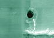

|
Die-related
Failure Mechanisms and Attributes
<Proceed to Page 2>
<Proceed to Page 3>
Contact
Migration
Contact
migration refers to the diffusion of the metal atoms of a contact
(usually Al or an alloy thereof) into the silicon substrate. This
phenomenon is due to the natural occurrence of interdiffusion between
two different interdiffusible materials in contact with each other, which are Al and Si in
this case. This phenomenon of interdiffusion occurs in both ways,
i.e., Al diffuses into Si and Si diffuses into Al. This is not
current-related and must not be confused with electromigration, which is
a different mechanism.
Junction
spiking occurs when the amount of Al migration into the silicon
substrate has reached the point wherein the Al has penetrated deep
enough so as to short a p-n junction in its path. By that time an
Al spike is said to have shorted the junction, damaging the device
permanently.
The reverse, wherein the Si atoms have entirely
penetrated the Al layer above, may also happen and can result in an open
circuit as a result of voids in the metal contact. Silicon
aggregates that have diffused through the Al layer and reached the
surface are known as
silicon nodules. Silicon nodules are often
observed over the bond pads as small but numerous hillocks, and are
known to cause wirebonding problems as well.
Al
migration is usually reduced by doping the Al with Si or Cu or both,
forming an alloy that is more resistant to Al-Si interdiffusion. A
barrier metal such as TiW or Pt-Si may also be deposited between the Al
layer and the silicon substrate.
Die
Corrosion
See separate article on
die corrosion.
Die
Scratches
Die
scratch is the presence of abrasion, scraping, or laceration damage on
the surface of the die.
See separate article on
die scratches.
Dielectric
Breakdown
Dielectric
breakdown refers to the destruction of a dielectric layer, usually as a
result of excessive potential difference or voltage across it. It
is usually manifested as a short or leakage
at
the point of breakdown.
There
are many types of dielectric in a typical die circuit, varying not only
in purpose but in chemical composition as well. The most
commonly used dielectric is SiO2, which is an
 oxide of silicon.
The permanent breakdown of an oxide dielectric is also usually referred
to as 'oxide rupture' or 'oxide breakdown.'
The
most common cause of dielectric breakdown in devices with no wafer fab
problem is EOS/ESD, since this can expose the dielectric layer to high
voltages.
Non-EOS/ESD-related
dielectric breakdowns may be classified into either an early life
dielectric breakdown (ELDB) or a time-dependent dielectric breakdown (TDDB),
depending on when in the device lifetime it occurs. Early life
dielectric breakdown, usually occurring within the device's first year
of operation, is just a special case of early life failure (ELF)
involving a dielectric layer. A dielectric breakdown is usually
classified as a TDDB if the device has been in operation for at least
two years already. These are just guidelines, because the point at
which a dielectric breakdown occurs is not just related to time, but to
other factors as well. ELDB and TDDB failures are usually caused
by a defect in the dielectric layer, such as stray particles which
decrease the effective thickness of the dielectric making it prone to
breakdown.
Since
SiO2 is a very common dielectric material, its breakdown mechanism has
been understood over the years. SiO2 breakdown is believed to be
due to charge injection, and may be broken down into 2 stages.
During the first stage, current starts to flow through the oxide as a
result of the voltage applied across it. High field/high current regions
are then formed as charges are trapped in the oxide. Eventually, these
abnormal regions reach stage 2, a critical point wherein the oxide heats
up and allows a greater current flow. This results in an
electrical and thermal runaway that quickly leads to the physical
destruction of the oxide.
See
also Oxide Breakdown and
Gate Oxide Breakdown.
<Proceed to Page 2>
<Proceed to Page 3>
See Also:
Package Failures; Failure
Analysis; Basic FA
Flows;
Reliability Models
HOME
Copyright
©
2001-2005
www.EESemi.com.
All Rights Reserved.
|